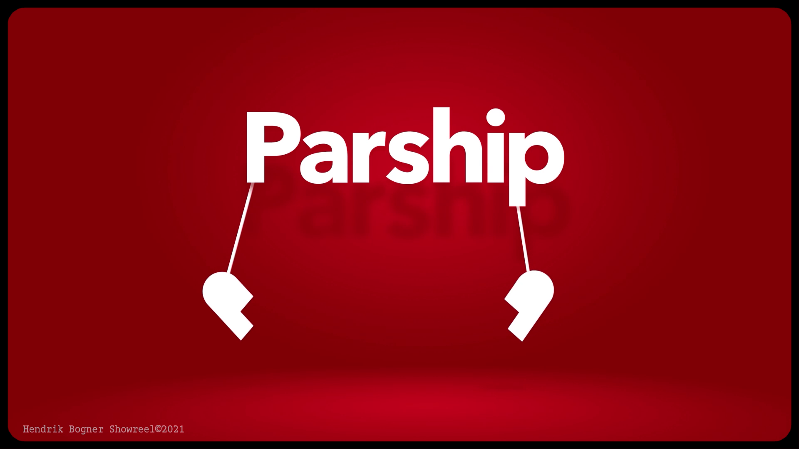
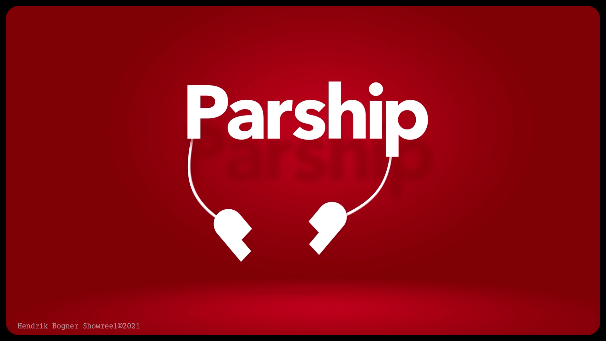
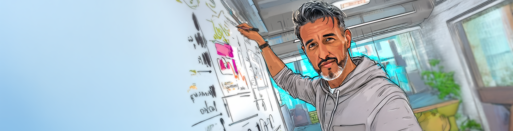
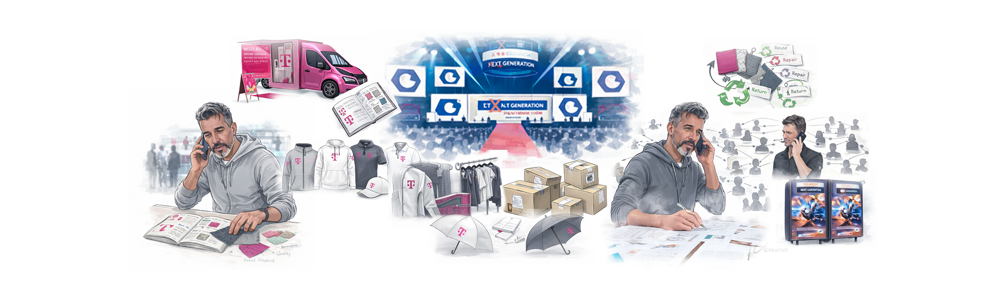
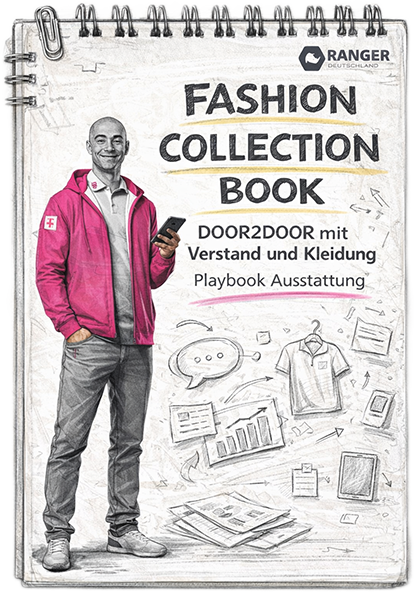
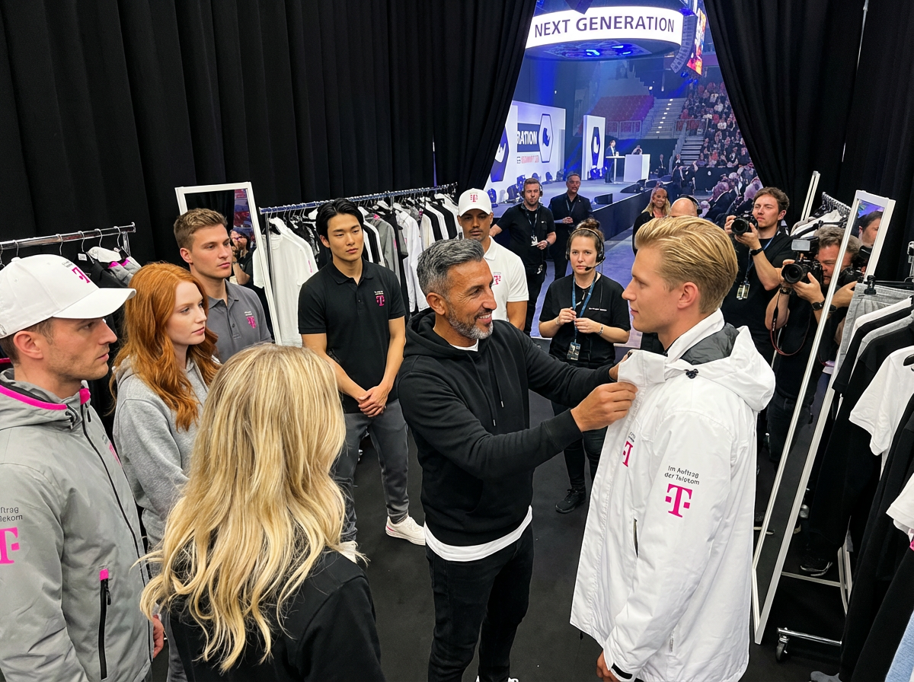
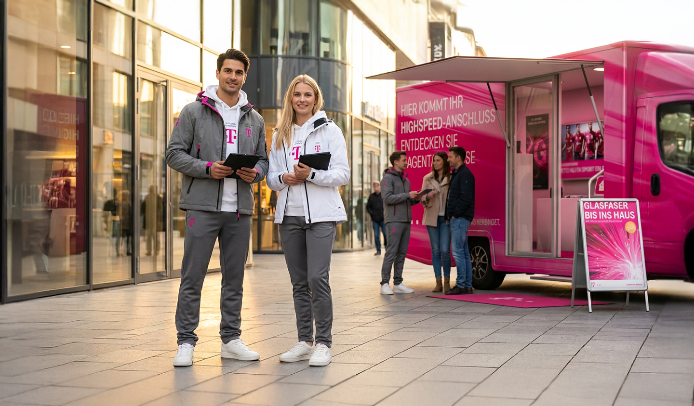
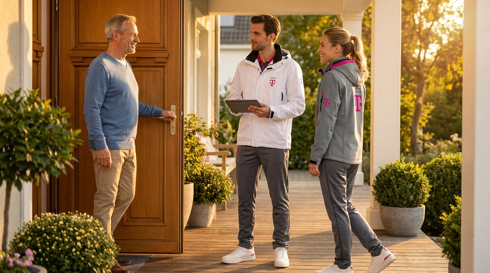
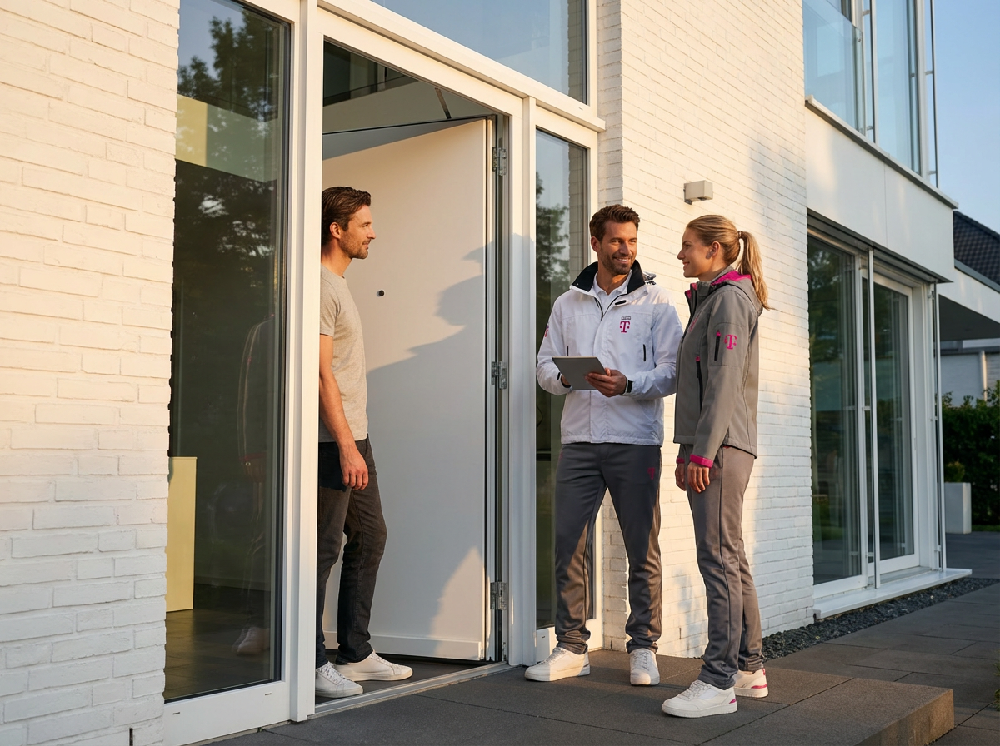

Strategie sichtbar machen.
*DasVisuelle ist das Finale,
Strategie davor der entscheidende Hebel.
Compact Guided Walktrough
Markentechnik:
Außen simpel – innen Science.
Bevor eine Marke visuell nach außen tritt, ist bereits vieles passiert. Manche Schritte lassen sich standardisieren, die entscheidenden jedoch sind individuell – sollte es zumindest.
Ich nehme Sie gerne mit und führe Sie durch spannende Entwicklungsjourneys – persönlich und unverbindlich. Buchen Sie mich bequem in meinen Kalender.
Reel


Schauen Sie in meinen Kalender
Jetzt Brand-Expertise buchen
Ein Klick, und wir sprechen über Ihre Marke.


FEATURE CASE
Markensynergien von Partnerschaften
Telekom & Ranger – ein neuer Auftritt an der Haustür
Wie aus einem schwierigen Umfeld vor der Haustür ein klar gestalteter Auftritt wurde – mit Markenführung, Design und einem KI-gestützten Brand System in einer Hand.

Ausgangspunkt

„Am Anfang stand keine Kollektion oder gar eine Academy-Plattform, sondern ein Bauchgefühl. Zwischen dem Anspruch der Marke und dem, was draußen ankommt, klaffte eine Lücke. Genau diese Lücke wollten wir greifbar machen.“
01
Status quo vor der Haustür
Glasfaser ist begehrt, alle reden über Geschwindigkeit und Zukunftsfähigkeit – und trotzdem kommen die Abschlüsse nicht in dem Maß, wie sie könnten.
Viele Menschen erleben Besuche an der Tür als störend und undurchsichtig. Vor den Türen stehen ständig wechselnde Anbieter, ohne klare Kennzeichnung und ohne gemeinsame Standards.
Das Bild: viel Klingen, wenig Klarheit, viel Potenzial für ein wichtiges Infrastrukturangebot, das im Alltag oft nicht ankommt.

02
Perspektiven der Anspruchsgruppen
Der Ausbau von Glasfaser ist an konkrete Zeitfenster gekoppelt und steht politisch wie gesellschaftlich im Fokus. Gleichzeitig treffen hier unterschiedliche Interessen aufeinander: Kund:innen, Vertrieb, Telekom, Ranger sowie lokale Politik und Regulatoren.
Es gab bislang keinen klar definierten, positiv belegten Auftritt an der Haustür – teilweise war das Format negativ konnotiert. Für das Projekt haben wir umfangreiche Markt- und Bedarfsanalysen, Daten, Gespräche und Beobachtungen zusammengeführt, um diese Lage belastbar zu verstehen.

KI-gestütztes Brand System
Data Flow
03
Vertiefung & Umsetzung
Statt nur an einzelnen Maßnahmen zu drehen, haben wir den Auftritt an der Haustür als System gedacht. Analysen, Gespräche und zahlreiche Teilprojekte sind in eine visuelle Karte geflossen, die Ziele, Themen und Abhängigkeiten sichtbar macht.
Herzstück ist mein Brand Project Mapper – eine Anwendung, die Projektwissen strukturiert, Zusammenhänge erkennt und Entscheidungen vorbereitet. Er kann Informationen zuordnen, kennt Fachabteilungen und Themen, generiert präsentationsfähige Ebenen und erzeugt Bildwelten direkt aus den hinterlegten Inhalten.
Daraus entstanden mehrere Teilprojekte, die in diesem Case exemplarisch gezeigt werden: Lernplattform und Behaviour, Kleidung und visuelle Identität, Launch und Rollout.
Brand Management, Designentscheidungen und der Aufbau der Tools lagen in einer Hand – damit das System nicht nur auf dem Papier, sondern im Alltag funktioniert.

Dynamische Umsetzung im Brand Panel

3.1
Kleidung & Identität
Gestaltung der Arbeitskleidung als zentrales Trägermedium des Auftritts: Funktion, Sicherheit, Komfort und visuelle Identität greifen ineinander.
Co-Branding-Logik, Guideline und Endorsement regeln das Zusammenspiel von Telekom und Ranger – von Logos und Farben bis zu Details wie Reflektoren, Zippern und Accessoires.
Co-Branding-Logik, Guideline und Endorsement regeln das Zusammenspiel von Telekom und Ranger – von Logos und Farben bis zu Details wie Reflektoren, Zippern und Accessoires.

3.2
Shooting
Aufbau einer Plattform für Verhaltens- und Produktschulung. Marken- und Vertriebsanforderungen werden in konkrete Leitlinien übersetzt.
Bildwelten und Inhalte bereiten den Alltag an der Haustür realistisch vor und machen Erwartungen an Rolle, Auftreten und Argumentation konkret besprechbar.
Bildwelten und Inhalte bereiten den Alltag an der Haustür realistisch vor und machen Erwartungen an Rolle, Auftreten und Argumentation konkret besprechbar.

3.3
Launch & Rollout
Einführung über Events, Summit und interne Kommunikation. Sinn und Zweck werden für Mitarbeitende nachvollziehbar gemacht, Identifikation gefördert.
Die Umsetzung wird in Prozesse, Logistik und den täglichen Einsatz überführt – vom ersten Briefing bis zu Schulungen und Nachjustierungen im Feld.
Die Umsetzung wird in Prozesse, Logistik und den täglichen Einsatz überführt – vom ersten Briefing bis zu Schulungen und Nachjustierungen im Feld.

04
Vom Konzept auf die Straße
Damit das System trägt, musste jede Entscheidung durch die Praxisprobe. Skizzen, Musterteile und Prototypen sind in Tests mit Teams und Stakeholdern gegangen: Sitzt die Kleidung, halten die Materialien, funktioniert die Ausstattung im echten Einsatz.
Parallel wurden Bildwelten, Schulungsinhalte, Guidelines und Prozesse so verknüpft, dass sie in Summe funktionieren – vom ersten Briefing über die Events bis zur letzten Retouren-Schleife.



05
Wirkung im Alltag
Der Auftritt an der Haustür wirkt heute planbarer, ruhiger und vertrauenswürdiger. Haushalte bekommen vor Ort eine strukturierte, verständliche Beratung statt spontaner Verkaufsversuche.
Mitarbeitende haben klare Leitplanken, spürbaren Rückhalt und Werkzeuge, mit denen sie ihren Job ernsthaft ausfüllen können.
Für die Telekom und Ranger ist ein sensibler Kontaktpunkt entstanden, der dem eigenen Anspruch an Professionalität und Verlässlichkeit deutlich näherkommt – und als Blaupause für weitere Vertriebswege dienen kann.



Lassen Sie uns über Ihren Auftritt sprechen
Wenn Sie sensible Kontaktpunkte – wie Haustür, Vertrieb oder Service – neu denken oder professionalisieren möchten, begleite ich Sie von der ersten Problemwolke bis zur Bühne: Strategie, Design und Tools aus einer Hand.

Auf der Suche nach einem großen Gedanken der Unternehmen inspiriert und Kunden fasziniert?
Kontaktieren Sie mich auf LinkedIn und lassen Sie uns gemeinsam Ihre nächsten Erfolge gestalten.